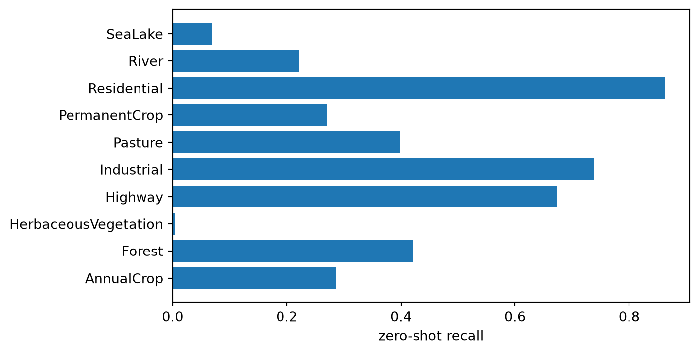

import re # to split CamelCase class names into words
from pathlib import Path
import open_clip
import torch
from matplotlib import pyplot as plt
from torch.utils.data import DataLoader, Subset
from torchvision.datasets import EuroSATZero-shot classifiers
The whole course so far trained models: loop, loss, epochs. This closing section of the transfer-learning part uses none of that. CLIP-style multimodal models were trained to place images and text in one shared embedding space, and that single trick turns them into classifiers that were never told our classes: describe the classes in words, encode the description, and match.
We try it on EuroSAT, and we compare with the model we fine-tuned.
Setup
device = (
torch.accelerator.current_accelerator()
if torch.accelerator.is_available()
else torch.device("cpu")
)
torch.manual_seed(42)
print(f"Torch version: {torch.__version__}\nDevice: {device}")Torch version: 2.13.0+cu130
Device: cudaWe use the original OpenAI CLIP with a ViT-B/32 image encoder, through open_clip, a library dedicated to these models:
model, _, preprocess = open_clip.create_model_and_transforms(
"ViT-B-32-quickgelu", pretrained="openai"
)
tokenizer = open_clip.get_tokenizer("ViT-B-32-quickgelu")
model = model.to(device).eval()
print(f"{sum(p.numel() for p in model.parameters()) / 1e6:.0f}M parameters")151M parameters- The first call downloads about 350 MB of weights; later calls hit the cache.
- The
-quickgelusuffix selects the activation of the original OpenAI training run: same architecture, subtly different network.
The third return value is CLIP’s own preprocessing. Unlike the ResNet-18 experiment, where we kept our 64 × 64 images, here we use it as-is:
print(preprocess)Compose(
Resize(size=224, interpolation=bicubic, max_size=None, antialias=True)
CenterCrop(size=(224, 224))
MaybeConvertMode()
MaybeToTensor()
Normalize(mean=(0.48145466, 0.4578275, 0.40821073), std=(0.26862954, 0.26130258, 0.27577711))
)Resizing to 224 is not a choice this time. The image encoder is a vision transformer: it cuts the image into patches and adds a learned position embedding to each, and those embeddings exist for exactly one resolution. Its normalization statistics are CLIP’s own too, not ImageNet’s.
Prompts as a classifier
Our class names are CamelCase identifiers (AnnualCrop); text encoders want words. A regular expression splits a name wherever an uppercase letter starts a new word:
root = Path("/project/def-sponsor00/data")def to_words(name):
# insert a space before each capital (except the first), lowercase
return re.sub(r"(?<!^)(?=[A-Z])", " ", name).lower()
print([to_words(c) for c in EuroSAT(root=root).classes[:3]])['annual crop', 'forest', 'herbaceous vegetation']The classifier is a list of sentences, one per class, described the way a caption would describe them:
classes = EuroSAT(root=root).classes
prompts = [f"a satellite image of {to_words(c)}" for c in classes]
print(prompts[:3])['a satellite image of annual crop', 'a satellite image of forest', 'a satellite image of herbaceous vegetation']Both encoders project into the same space, where matching image-text pairs sit close together. Encoding the prompts and normalizing the result gives us one vector per class:
tokens = tokenizer(prompts).to(device)
with torch.inference_mode():
text_features = model.encode_text(tokens)
# normalized, and back on the CPU: the similarity math is tiny
text_features = torch.nn.functional.normalize(text_features, dim=-1).cpu()
print(text_features.shape)torch.Size([10, 512])- The tokenizer turns each sentence into token ids; the text encoder is a small transformer with a max length of 77 tokens, plenty for us.
- Normalizing the embeddings turns dot products into cosine similarities: only directions matter, not lengths.
Images, once
The image side is one pass over the validation set with CLIP’s preprocessing, no training machinery anywhere:
val = Subset(EuroSAT(root=root, transform=preprocess),
torch.load(root / "split.pt", weights_only=True)["val"])
val_loader = DataLoader(
val, batch_size=128, num_workers=4, pin_memory=torch.accelerator.is_available(),
)
feats, targets = [], []
with torch.inference_mode():
for x, y in val_loader:
f = model.encode_image(x.to(device, non_blocking=True))
feats.append(torch.nn.functional.normalize(f, dim=-1).cpu())
targets.append(y)
img_features, targets = torch.cat(feats), torch.cat(targets)
print(img_features.shape, targets.shape)torch.Size([5400, 512]) torch.Size([5400])Classifying is now a matrix product: the similarities between every image and every class sentence, and a argmax along the classes:
logits = img_features @ text_features.T
preds = logits.argmax(dim=1)
acc = (preds == targets).float().mean()
print(f"zero-shot accuracy: {acc:.1%}")zero-shot accuracy: 39.0%About 39%: remarkable for a classifier that learned our ten classes two cells ago, and far from the 96% of the fine-tuned model. Both halves of that sentence are the lesson of this page; let us look closer at each.
Phrasing matters
The prompt list is the classifier, so its wording matters. The same features, three phrasings:
def zero_shot_accuracy(template):
texts = [template.format(to_words(c)) for c in classes]
tokens = tokenizer(texts).to(device)
with torch.inference_mode():
tf = torch.nn.functional.normalize(model.encode_text(tokens), dim=-1).cpu()
return ((img_features @ tf.T).argmax(dim=1) == targets).float().mean()
for template in ("{}", "a photo of {}", "a satellite image of {}"):
print(f"{template:>28}: {zero_shot_accuracy(template):5.1%}") {}: 35.5%
a photo of {}: 32.6%
a satellite image of {}: 39.0%- CLIP’s canonical prompt, “a photo of …”, underperforms the bare class names here: it steers the text towards web photography, away from our domain.
- The domain-aware phrasing buys a few points. Real gains come from describing the classes like captions do, not from prefix tuning.
A standard trick we are skipping: prompt ensembling, averaging the text embeddings of several templates per class. It stabilizes zero-shot classifiers on natural photos. On EuroSAT we measured it within a point of the best single template: with this domain gap, phrasing is not the bottleneck.
Where does it break?
Per-class recall shows the shape of the failure much better than the 39% average:
recall = torch.stack([
(preds[targets == c] == c).float().mean() for c in range(10)
])
fig, ax = plt.subplots(figsize=(7, 4))
ax.barh(classes, recall.tolist())
ax.set_xlabel("zero-shot recall")
- Classes whose names describe scenes that fill web photo captions do fine: residential neighbourhoods, industrial buildings, highways.
- Classes whose names are remote-sensing jargon collapse: “herbaceous vegetation” is not how anyone captions an image, and SeaLake, trivially easy for every trained model in this course, is nearly never predicted by CLIP. The classifier is only as good as the meeting point between our vocabulary and the model’s training captions.
This is domain shift in its plainest form, and the field answers it the same way each time: fine-tune the multimodal model on domain data. Remote-sensing CLIPs exist (see for instance RemoteCLIP), built with exactly the recipe of our transfer-learning section, one level up.
When to reach for zero-shot
Zero-shot costs no labels, no training, and one line of change to retarget: a different prompt list is a different classifier. That makes it the cheapest first experiment in applied deep learning: a floor under any labelling effort, a way to explore what a model knows about a domain before investing, and occasionally (web-adjacent domains, open-ended label spaces) the final solution.
Specialized domains pull the other way. On EuroSAT, 39% zero-shot against 96% fine-tuned is the honest comparison, and the reason the fine-tuning section of this course exists.
Where this is heading is bigger than classification: the same image encoders, paired with language models, answer free-form questions about images. Our webinar The LLM era picks up that thread.
Your turn:
Class names are jargon; captions are plain language. Replace each class name with a plain-language descriptor of what the patch shows (e.g. “residential neighbourhood houses” for Residential), keep the “a satellite image of” template, and measure again.
- Hint: build
descriptors, a list of 10 strings in class order, thenprompts = [f"a satellite image of {d}" for d in descriptors].